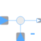

FeedbackOutput difference between commanded input 1 and feedback input 2 |

|
Information
This information is part of the Modelica Standard Library maintained by the Modelica Association.
This blocks computes output y as difference of the
commanded input u1 and the feedback
input u2. Optionally, either input u1 or u2 or both inputs can be processed conjugate complex, when parameters useConjugateInput1 and useConjugateInput2 are true, respectively.
y = (if useConjugateInput1 then Modelica.ComplexMath.conj(u1) else u1) - (if useConjugateInput1 then Modelica.ComplexMath.conj(u2) else u2);
Example parameters:
useConjugateInput1 = true,useConjugateInput2 = false
result in the following equation:
y = Modelica.ComplexMath.conj(u1) - u2
Parameters (2)
| useConjugateInput1 |
Value: false Type: Boolean Description: If true, input 1 is processed conjugate complex |
|---|---|
| useConjugateInput2 |
Value: false Type: Boolean Description: If true, input 2 is processed conjugate complex |
Connectors (3)
| u1 |
Type: ComplexInput |
|
|---|---|---|
| u2 |
Type: ComplexInput |
|
| y |
Type: ComplexOutput |